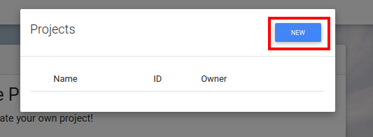
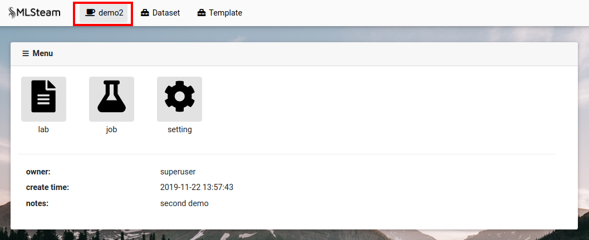

Project¶
Create project¶
Press “Project” button.

At the pop-up window press “New”.
Input project name and any related notes, then press “Create”.

The last created project becomes the default project.
Browse projects¶
Press the button with the default project name (“Project” if there are no projects).



Delete project¶
Press the button with the default project name to open the list of projects.
Press trash icon on the side of project that needs to be deleted.

Confirm.